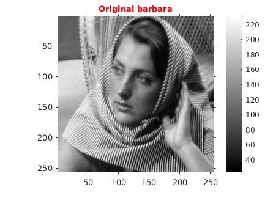
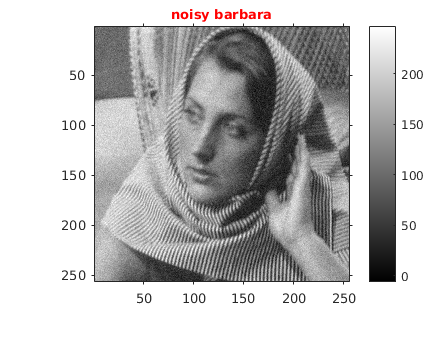
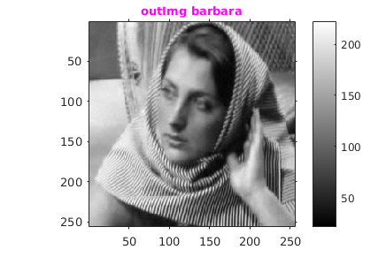
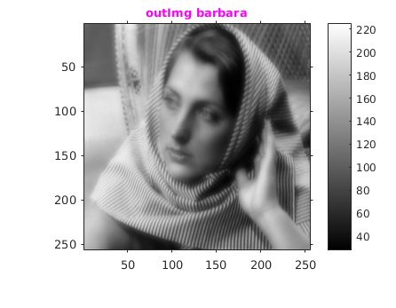
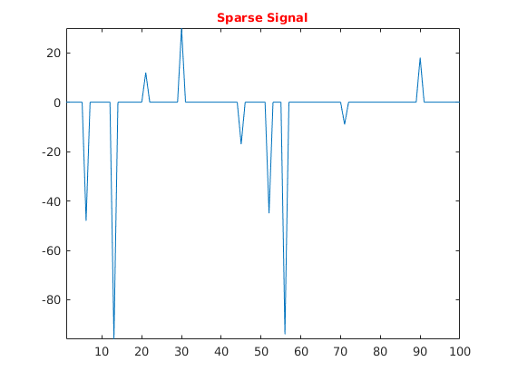
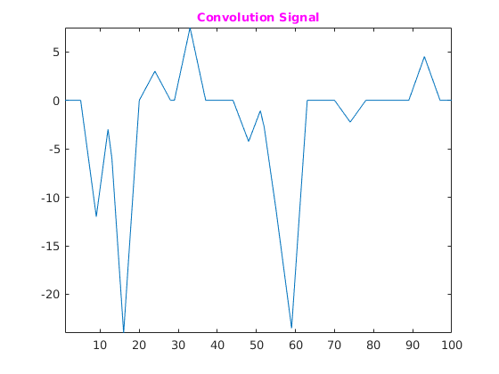
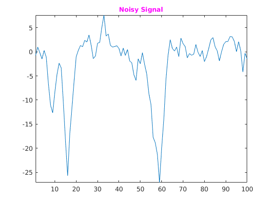
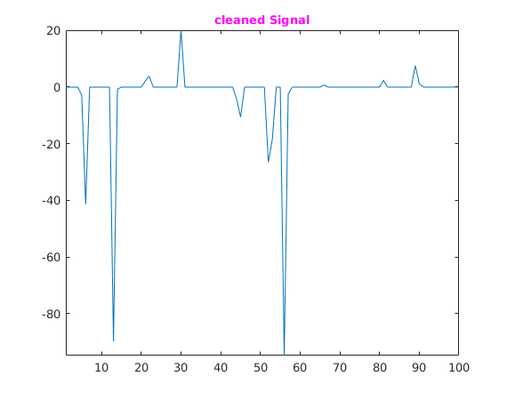

Assignment2-1 - ISTA
Rollno: 163059009, 16305R011
Contents
Init
clear all; file='barbara256.png'; img=imread(file); img=double(img); %%img=im2double(img); figure('name','Original barbara'); imshow(img,[]); title('\fontsize{10}{\color{red}Original barbara}'); axis tight,axis on; o1 = get(gca, 'Position'); colorbar(),set(gca, 'Position', o1);
1. Part (a) y = x + eta
[H,W]=size(img); NoisyImg=img+getGuassainNoise(H,W,10); figure('name','noisy barbara'); imshow(NoisyImg,[]); title('\fontsize{10}{\color{red}noisy barbara}'); axis tight,axis on; o1 = get(gca, 'Position'); colorbar(),set(gca, 'Position', o1);
1.1 Rescontruction
patchSize=8; alphaAdd=3.0; convergeVal=0.1; lambda=30; outImg=reconstruct(NoisyImg,patchSize,lambda,convergeVal,alphaAdd);
figure('name','outImg barbara'); imshow(outImg,[]); title('\fontsize{10}{\color{magenta}outImg barbara}'); axis tight,axis on; o1 = get(gca, 'Position'); colorbar(),set(gca, 'Position', o1); % Mean square error rmse=getRMSE(outImg,img ); fprintf('RMS Error: %f\n',rmse); pause(1);
RMS Error: 6.510685
2. Part b
[H,W]=size(img); epsilon=0.039; patchSize=8; figure('name','original barbara'); imshow(img,[]); title('\fontsize{10}{\color{red}Original barbara}'); axis tight,axis on; o1 = get(gca, 'Position'); colorbar(),set(gca, 'Position', o1);
2.1 Reconstruction
% RMS Error: 11.859743 tic lambda=1; convergeVal=0.1; alphaAdd=35.0; outImg=reconstructb(img,patchSize,lambda,convergeVal,alphaAdd); figure('name','outImg barbara'); imshow(outImg,[]); title('\fontsize{10}{\color{magenta}outImg barbara}'); axis tight,axis on; o1 = get(gca, 'Position'); colorbar(),set(gca, 'Position', o1); % Mean square error rmse=getRMSE(outImg,img ); fprintf('RMS Error: %f\n',rmse); toc pause(1);
RMS Error: 11.859743 Elapsed time is 296.468263 seconds.
3. Part (c)
N : signal length
rng(3,'twister'); N = 100; x = zeros(N,1); pos=randi([1,100],10,1); x(pos)=randi([-100,100],10,1); % Define filter num = [1, 2, 3, 4, 3, 2, 1]; dnum = 16; hx = filter(num,dnum,x); noise = 0.05*max(x)*randn(N,1); y = hx + noise;
3.1 Showing Signal
figure('name','Sparse Signal'); plot(x) title('\fontsize{10}{\color{red}Sparse Signal}'); axis tight,axis on; figure('name','Convolution Signal'); plot(hx) title('\fontsize{10}{\color{magenta}Convolution Signal}'); axis tight,axis on; figure('name','Noisy Signal'); plot(y) title('\fontsize{10}{\color{magenta}Noisy Signal}'); axis tight,axis on;  
3.2 Creating A matrix
Deriving H matrix(circulant matrix derived from blur kernel)
NUM=zeros(100,100); [~,numlen]=size(num); for i=1:N-numlen+1 NUM(i,i:numlen+i-1)=num; end DNUM=zeros(100,100); [k,numlen]=size(dnum); for i=1:N-numlen+1 DNUM(i,i:numlen+i-1)=dnum; end H=DNUM\NUM'; % deconvolution lam=1.8; convergeVal=0.000001; alphaAdd=3.0; alpha=eigs((H'*H),1)+alphaAdd; theta=ISTA(y,H,lam,convergeVal,alpha); figure('name','cleaned Signal'); plot(theta) title('\fontsize{10}{\color{magenta}cleaned Signal}'); axis tight,axis on; o1 = get(gca, 'Position'); colorbar(),set(gca, 'Position', o1);